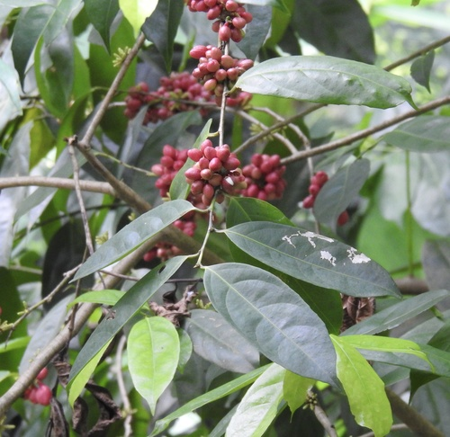

Lacistemataceae
Lacistema Family
Lacistemataceae is a small family of woody plants in the order Malpighiales, containing 2 genera (Lacistema and Lozania) and approximately 16 species. These trees and shrubs are characterized by their alternate leaves with distinctive brochidodromous venation (secondary veins connecting near the margin), catkin-like inflorescences in leaf axils, and minute flowers with a single stamen that bifurcates into two anthers. Endemic to the Neotropical region, ranging from Mexico and the Caribbean to northern Argentina, they typically grow in various forest habitats from lowlands to mountains. The family is recognized by its unique combination of stipules, pellucid-punctate leaves, reduced flowers arranged in catkins, and fruits with arillate seeds.
Overview
The Lacistemataceae family includes 2 genera, Lacistema and Lozania, with approximately 14-16 species in total. These plants are evergreen trees or shrubs distributed throughout the tropical regions of Central and South America, including the Caribbean islands. They typically grow in the understory of wet or dry forests, from lowlands to montane regions.
Members of this family are recognized by their simple, alternate leaves with small stipules. Their most distinctive feature is the inflorescence, which consists of dense, often catkin-like spikes or racemes bearing numerous small, highly reduced flowers. Each flower typically lacks obvious petals and sepals, often consisting of just a single stamen, a superior ovary, and a subtending bract, sometimes associated with a fleshy disc. The fruit is a small, fleshy drupe or berry, usually containing a single seed.
Lacistemataceae has little direct economic importance, though some species may be used locally. Its phylogenetic position within the large and diverse order Malpighiales (Rosid clade) has been clarified by molecular studies, often placing it near families like Salicaceae (willow family).
Quick Facts
- Scientific Name: Lacistemataceae Mart.
- Common Name: Lacistema Family
- Number of Genera: 2 (Lacistema, Lozania)
- Number of Species: Approximately 16
- Distribution: Neotropics (Central and South America, Caribbean)
- Evolutionary Group: Eudicots - Rosids - Fabids - Malpighiales
Key Characteristics
Growth Form and Habit
Members of Lacistemataceae are woody plants, typically:
- Small to medium-sized trees, reaching heights of 4-15 meters
- Shrubs, sometimes forming thickets
- Evergreen, with persistent foliage throughout the year
They are often components of forest understories but can also be found in forest edges, clearings, and occasionally in more open or disturbed habitats. Some species are known to colonize newly opened areas where trees have fallen or in secondary growth forests.
Leaves
The leaves of Lacistemataceae have several distinctive characteristics:
- Arrangement: Alternate along the stems, never opposite or whorled
- Type: Simple, never compound
- Venation: Brochidodromous (secondary veins connecting near the margin in a series of loops)
- Margins: Entire to serrate, depending on the species
- Texture: Often somewhat leathery or papery
- Special features: Often with pellucid-punctations (translucent dots visible when held up to light)
- Stipules: Present, a pair of stipules encompassing the growth point, sometimes caducous (falling off early)
The brochidodromous venation pattern and the presence of stipules are important diagnostic features for the family.
Inflorescences and Flowers
The reproductive structures of Lacistemataceae are highly distinctive:
- Inflorescences: Catkin-like structures (aments) located in the leaf axils, often multiple per axil
- Flower size: Extremely small, typically about 1 mm in length
- Flower structure: Highly reduced and specialized
- Perianth: Typically consists of 4-6 small scales or sepals
- Androecium: A single stamen with a filament that bifurcates into two anthers—a unique and diagnostic feature
- Gynoecium: A single superior ovary with a single style topped by three stigmas
- Placentation: Parietal, with 2-3 placentas
- Ovules: Few per locule
The catkin-like inflorescences and the unique stamen structure with bifurcating anthers are among the most distinctive features of the family.
Fruits and Seeds
After pollination, the flowers develop into:
- Fruit type: Small, fleshy to leathery capsules that split open when ripe
- Fruit color: Often reddish or orange when mature
- Seeds: 1-3 per fruit
- Aril: Seeds are covered by a fleshy aril, which is often brightly colored
The arillate seeds are an important feature for seed dispersal, likely attracting birds and other animals that consume the nutritious aril and disperse the seeds.
Chromosomes and Genetics
The chromosomal and genetic characteristics of Lacistemataceae include:
- Chromosome number: Approximately 2n = 62 (n = 31)
- Genetic relationships: Molecular studies place Lacistemataceae firmly within the order Malpighiales, closely related to Salicaceae and Samydaceae
The high chromosome number suggests a possible polyploid origin for the family.
Ecological Adaptations
Lacistemataceae species have adapted to various ecological niches within the Neotropical region:
- Habitat range: From mountain forests to lowland rainforests, dry forests, and occasionally more open habitats like the Brazilian Cerrado
- Forest strata: Primarily understory components (C/D vegetation layers)
- Successional role: Some species are early colonizers of disturbed areas or forest gaps
- Pollination: Likely by small insects, though detailed pollination biology is poorly studied
- Seed dispersal: Primarily by birds attracted to the colorful arils
The ability of some species to colonize disturbed areas has led to them being considered weeds in some agricultural settings.
Distinguishing Features
Lacistemataceae can be distinguished from other plant families by a combination of:
- Alternate leaves with brochidodromous venation
- Presence of stipules at growth points
- Catkin-like inflorescences in leaf axils
- Minute flowers with a single stamen that bifurcates into two anthers
- Capsular fruits with arillate seeds
This combination of features makes Lacistemataceae relatively easy to recognize, despite the small size of the flowers.

Detailed flower structure of Lacistema showing the distinctive single stamen with bifurcating filament leading to two anthers, a key diagnostic feature of the family.
Field Identification
Identifying Lacistemataceae involves recognizing its woody habit combined with distinctive inflorescences and highly reduced flowers:
Primary Identification Features
- Habit: Evergreen trees or shrubs in Neotropical forests.
- Leaves: Simple, alternate, with small stipules.
- Inflorescence: Dense, often catkin-like spikes or racemes in leaf axils.
- Flowers: Very small, highly reduced perianth (often appearing absent), typically with only a single stamen and a fleshy disc.
- Ovary Position: Ovary is superior.
- Fruit: Small drupe or berry, usually 1-seeded.
Secondary Identification Features
- Bracts: Flowers subtended by noticeable bracts in the dense inflorescence.
- Stamen Number: Almost always 1 per flower.
- Habitat: Understory of tropical forests.
Seasonal Identification Tips
- Flowering/Fruiting Season: Varies geographically within the tropics. The dense spikes/racemes (whether flowering or fruiting) are the most useful feature for spotting these plants.
- Vegetative State: Identifying based solely on leaves (simple, alternate, stipulate) can be difficult without the characteristic inflorescences or fruits.
Common Confusion Points
Lacistemataceae might be confused with other tropical woody plants with dense, small-flowered inflorescences:
- Salicaceae (Willow family - tropical members like Casearia, Xylosma): Also in Malpighiales. Often have simple alternate leaves and small flowers in clusters or racemes, but flower structure differs (e.g., often more stamens, different ovary structure, fruit often a capsule or berry).
- Piperaceae (Pepper family): Some tropical shrubs/trees (e.g., Piper) have dense spikes of highly reduced flowers, but these are typically fleshy spikes bearing minute flowers lacking perianth and often directly embedded, leaves often have characteristic stipules or scent, and fruit is a small drupe. Belongs to Piperales (Magnoliids).
- Euphorbiaceae (Spurge family): Highly diverse; some have dense inflorescences (e.g., catkin-like in Acalypha), but flowers are unisexual, often with specialized structures (cyathia in Euphorbia), and fruit is typically a 3-lobed schizocarp.
- Moraceae (Fig family): Some have catkin-like inflorescences (e.g., Morus - mulberry), but possess latex and have different flower/fruit structures.
Field Guide Quick Reference
Look For:
- Neotropical trees/shrubs
- Leaves simple, alternate, stipulate
- Dense, catkin-like spikes/racemes
- Flowers very small, reduced perianth
- Usually 1 stamen per flower
- Fleshy disc often present
- Superior ovary
- Fruit a small drupe/berry
Key Variations:
- Inflorescence length and density
- Leaf margin (entire vs. serrate)
- Fruit color when mature
Notable Examples
The family comprises two closely related genera.

Lacistema aggregatum
(Various local names)
A common and widespread species of the genus Lacistema, found from Mexico and the Caribbean south to Brazil and Bolivia. A shrub or small tree with dense, short spikes of minute flowers in the leaf axils. Fruit is a small reddish drupe.

Lacistema pubescens
(Various local names)
Another species of Lacistema found in South America. Similar to L. aggregatum but often distinguished by more pubescent (hairy) twigs and leaves.

Lozania mutisiana
(Various local names)
Represents the second genus, Lozania, found in northwestern South America (e.g., Colombia, Ecuador, Peru). Differs from Lacistema in subtle floral details (e.g., disc structure, anther dehiscence) and often has longer, more slender inflorescences.
Phylogeny and Classification
Lacistemataceae is placed in the large order Malpighiales, within the Fabid clade of Rosids. Its exact position within this diverse order has sometimes been uncertain due to its somewhat isolated morphology.
Molecular phylogenetic studies generally place Lacistemataceae within the "salicoid clade" (or related groupings) within Malpighiales. This suggests a relationship with families like Salicaceae (willow and poplar family, which now includes many former Flacourtiaceae), Violaceae (violet family), Passifloraceae (passionflower family), and potentially Turneraceae and Malesherbiaceae (often merged into Passifloraceae). This placement groups it with families often characterized by parietal placentation, simple stipulate leaves, and sometimes reduced flowers.
Position in Plant Phylogeny
- Kingdom: Plantae
- Clade: Angiosperms (Flowering plants)
- Clade: Eudicots
- Clade: Rosids
- Clade: Fabids (Eurosids I)
- Order: Malpighiales
- Family: Lacistemataceae
Evolutionary Significance
Lacistemataceae, though small and geographically restricted, is significant for:
- Floral Reduction: Represents an extreme case of floral reduction within Malpighiales, particularly the near absence of perianth and reduction to a single stamen, likely related to pollination strategy (possibly wind or unspecialized insects).
- Phylogenetic Placement: Its position within the salicoid clade helps understand the relationships and character evolution within this large subgroup of Malpighiales.
- Neotropical Diversity: Contributes to the diversity of woody plant lineages endemic to the Neotropics.
- Morphological Uniqueness: The combination of dense, catkin-like spikes with highly reduced, 1-stamen flowers is morphologically distinctive.